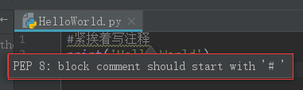

1.7 注释规范
我们可以在代码中，用自己熟悉的语言，在程序中对某些代码进行标注说明，这能够大大增强程序的可读性。这样不论是读别人的代码，还是读取自己以前编写的代码，都能节省大量的时间。
注释的种类：
单行注释
以#开头，#右边的所有东西当做说明，而不是真正要执行的程序，起辅助说明作用。
# 注释内容，可以在这里写一些功能说明
print('Hello World')
规范
如果在编写注释时，#后面紧挨着写注释的内容，会有如下的提示：

这次不是红色的波浪线，代表不是严重会导致程序运行出错的问题，但是不符合编写代码的编程规范。
对于红色的波浪线，基本是语法问题，必须全部解决。
对于普通的波浪线，基本是编程规范问题，尽量减少或者最好全部解决。
编程规范就是在编写代码时，要遵守的一些语法之上的规则，符合编程规范的代码，无论是阅读还是改写都会比较容易，反之则难以维护。
编程规范在公司或组织中，通常会统一制定并强制遵守，在后面的课程中，会逐步介绍常见的编程规范。
有关注释的基本规范：
- #后面空一格，再写注释内容；
- 注释另起一行，尽量不写在一行的末尾；
- 对文档，代码段，重要的变量，取值等加注释进行说明；
- 注释行数不少于代码总行数的15-20%。